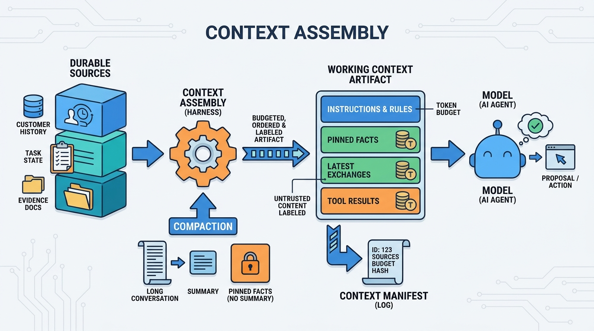

Part IV — CONTEXT: Context, Knowledge, Memory and State
Context Engineering: Building What the Model Sees
AI-assisted: written with Claude Code, images generated with the Gemini API. How this works

Image generated by Google Gemini (gemini-3-pro-image-preview)